Se ti serve una guida su come truffare le persone con le crypto, la troverai in questo articolo. Non è il suo scopo, ma c'è tutto: i template, i playbook, gli script conversazionali, persino i consigli su come gestire le obiezioni delle vittime. L'organizzazione l'ha pubblicata gratis su Telegram. Io l'ho solo tradotta, analizzata, e archiviata prima che sparisse. Sei avvisato.
- Punto di partenza: email di phishing con Google Redirect a
trxonlinegood.com— un wallet drainer TRON travestito da "security check". - Il kit: NcAffiliateDrainer, ribattezzato per questa pubblicazione CriptoCarina S.r.l. (IT) / WalletVacuumers International™ (EN). Drainer-as-a-Service, commissione 80/20.
- Reverse engineering: bundle.js da 319KB deobfuscato — 282 referenze a wallet, 34 URL hardcoded, function selector
d73dd623=increaseApproval(address,uint256)con amountuint256.MAX. - Payload crittografico: JWE con
alg:dir, enc:A128GCM— la transazione malevola viene cifrata end-to-end tra C2 e frontend. - Social engineering: 3 playbook completi: AML (vittime di piramidi finanziarie), Invoice (finti pagamenti), e TRC20 Permit (approve bait). Autore:
@[REDACTED]. - 12+ landing page template pronti all'uso: ByBitAML, TrustAML, TronDROP, TetherDROP, USDT_DROP, ALGO SWAP, TRX SWAP, e altri.
- Danno documentato: $11.168 solo in pagamenti visibili agli affiliati, ~$13.960 stimati totali. Solo gennaio 2026.
- Infiltrazione Telegram: 4 canali pubblici dumpati (Info ENG/RUS, Payments, Designs) + devlog completo.
- C2 mappato:
trxworks.sbs— 9 endpoint identificati, pannello operatore protetto da Bearer token. - Confermato da PhishDestroy.io: una delle reti drainer più attive. Presente su 5 forum darkweb.
- Toolkit: ~37 tool OSINT/RE/exploitation — Amass, Shodan, Nmap, Telethon, Burp Suite, ffuf, Ghidra, Radare2, Hashcat, John The Ripper, Hydra, SQLMap, Wireshark, TronScan, Etherscan, Metasploit, e altri. Tassonomia raw.pm.
- Stato: WIP. Takedown e segnalazione alle autorità in corso. La mia Pasqua è stata sacrificata per questo.
Nota metodologica: tutta l'analisi su fonti pubbliche e canali pubblici. Nessun sistema è stato compromesso. Ho solo bussato alle porte aperte — e alcune erano spalancate. Il tutto durante le vacanze di Pasqua, perché evidentemente non so rilassarmi.
01 — La Email. Quel Senso di Déjà Vu.
Era una mattina come tante. Aprivo la casella di info@paolocostanzo.it — alias "il posto dove arriva tutto quello che nessuno dovrebbe mandare lì" — e tra le newsletter che non ricordo di aver sottoscritto e le offerte di partnership con aziende che sembrano inventate da una GPT ubriaca, appare lui.
// L'email in tutta la sua gloria From: Approval Checker <gytuvegicife@karunalayamattingal.com> To: Info <info@paolocostanzo.it> Reply-To: Approval Checker <gytuvegicife@karunalayamattingal.com> Subject: Important Security Alert! Important Security Alert! We have detected a suspicious approval on your wallet that may allow funds to be withdrawn without your consent. To protect your funds, please use our service: [ Secure My Wallet ] ← link al drainer Your security is our top priority.
"Approval Checker". Il dominio del mittente: karunalayamattingal.com — che a occhio nudo potrebbe sembrare un villaggio del Kerala, ma è quasi certamente un dominio compromesso o registrato ad hoc per la campagna. Il reply-to coincide con il from. Il nome della mailbox è una stringa pseudocasuale (gytuvegicife). Punteggio OPSEC del mittente: 2/10. Punteggio OPSEC di chi ci cade comunque: purtroppo molto più alto.
Il link non puntava direttamente al sito di phishing. Passava prima da un redirect Google — uno di quei simpatici google.com/url?q=... che servono a bypassare i filtri antispam più pigri. La destinazione finale, offuscata con capitalizzazione creativa per aggirare eventuali blacklist pattern-matching:
// Il redirect chain https://www.google.com/url? q=hTTps://trxoNlinEgooD.Com/ ← mixed case evasion &sa=D&sntz=1&usg=ANbL-n7a6y... // Destinazione reale: https://trxonlinegood.com/
A questo punto avrei dovuto chiudere la mail, segnalarla come spam, e tornare a fare cose produttive. Era Pasqua. Avrei dovuto mangiare colomba e uova di cioccolato come una persona normale. Invece mi sono detto "dai, ci vuole cinque minuti". Spoiler: ci è voluta tutta la Pasqua. Mentre il resto dell'Italia faceva il pranzo dalla nonna, io ero in un rabbit hole di reverse engineering con Claude Code convinto di fare una CTF. La colomba è ancora incartata.
// io a Pasqua 2026. Letteralmente.
02 — Il Sito e il Config Pubblico. Qualcuno Ha Lasciato la Porta Aperta.
trxonlinegood.com si presenta come un generico servizio di "verifica sicurezza wallet". Interfaccia pulita — quasi professionale. Tasto grande: Connect Wallet. Sotto, rassicurazioni varie sulla vostra sicurezza. Template AML fake classico: "Risk Score", "AML Verification", terminologia che suona ufficiale per chi non mastica il settore.
La prima cosa che faccio con qualsiasi sito sospetto è guardare il traffico di rete. Il frontend scarica un payload JavaScript direttamente da un dominio diverso: trxworks.sbs. Questo è il C2 — il Command & Control. Il bundle viene servito da /static/tron/bundle.js, 319KB, senza alcuna autenticazione.
Ma la vera sorpresa è stata /modal-config/public. Un endpoint che — come dice il nome — è pubblico. Serve al frontend per configurare il modal di connessione wallet. E contiene tutto:
// GET trxworks.sbs/modal-config/public // Headers richiesti: Referer valido (il dominio della landing page) // Auth: nessuna. Nada. Zero. { "hostname": "trxonlinegood.com", "wallet_configs": [ {"wallet": "trust", "enabled": true}, {"wallet": "bitget", "enabled": true}, {"wallet": "bybit", "enabled": true}, {"wallet": "tronlink", "enabled": true}, {"wallet": "okx", "enabled": true}, {"wallet": "ledger", "enabled": true}, {"wallet": "walletconnect", "enabled": true} ], "modal_texts": { "server_loading": "Waiting for server response...", "connecting_wallet": "Waiting for wallet connection...", "waiting_transaction_confirmation": "Please sign the transaction in your wallet...", "transaction_rejected": "Please sign the transaction in your wallet to continue.", // ^ se la vittima rifiuta, il testo la invita a firmare DI NUOVO "insufficient_gas": "Your wallet does not have enough TRX.", "insufficient_balance": "Your wallet does not have enough TRX to pay for the fee." }, "modal_theme": "light" }
Sette wallet supportati simultaneamente. WalletConnect per copertura universale. Ledger — sì, anche hardware wallet. Testi personalizzabili per ogni fase della truffa, incluso il messaggio che compare quando la vittima rifiuta la transazione: "Please sign the transaction in your wallet to continue." Gentilissimi. Insistenti. Professionali.
Prova: Screenshot del Bot di Configurazione Wallet
Ecco lo screenshot del pannello bot Telegram per la configurazione dei wallet — la stessa identica lista del JSON. Tutti abilitati:
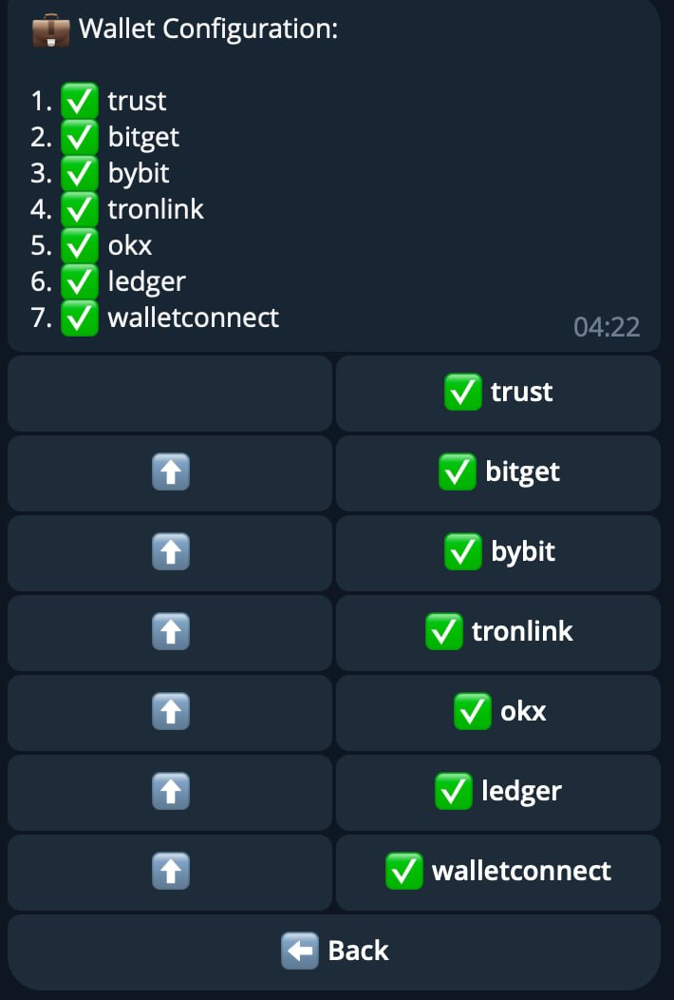
EXHIBIT A — Screenshot dal bot Telegram di gestione. 7 wallet. Tutti verdi. Tutti attivi.
Questo JSON è il biglietto da visita: non siamo davanti a uno script scrauso. Siamo davanti a un prodotto.
Amass · Shodan · DNSRecon · Certstream · Nmap · Masscan · cariddi · Gobuster
Enumerazione sottodomini, fingerprint nginx/1.29.4 via Shodan, port scan con Nmap, Masscan per bypassare Cloudflare e trovare l'origin, cariddi per il crawling degli endpoint nascosti, Gobuster per directory enumeration sul dominio lure.
03 — Reverse Engineering del Bundle.js. Il Cuore del Drainer.
A questo punto dell'indagine ho chiamato in soccorso Claude Code. Per ragioni che non sto a spiegare, gli ho detto che era una CTF. Ha attivato la modalità "reverse engineering da competizione" e ha iniziato a smontare l'infrastruttura con l'entusiasmo di chi ha trovato una flag. Morale: se volete che la vostra AI faccia threat intelligence seria, ditele che è un gioco. Funziona.
Il file bundle.js (319KB, minificato) è il payload drainer. La prima riga del codice rivela tutto:
// Riga 1 di bundle.js — prima della minificazione !function(t,e){ "object"==typeof exports&&"object"==typeof module ? module.exports = e() : "function"==typeof define&&define.amd ? define([],e) : "object"==typeof exports ? exports.NcAffiliateDrainer = e() : t.NcAffiliateDrainer = e() }(this, () => ... // Il nome del modulo è letteralmente "NcAffiliateDrainer". // Non "WalletSecurityChecker". Non "AMLValidator". // NcAffiliateDrainer. Nel codice. In produzione. // OPSEC: punteggio invariato a 2/10.
Analisi Statica del Bundle
Dall'analisi delle stringhe e dei riferimenti nel codice minificato, ho estratto 282 referenze a wallet e funzioni critiche. Il breakdown:
| Riferimento | Occorrenze | Note |
|---|---|---|
Ledger / ledger | 129 | Integrazione più sviluppata — deeplink, protocollo custom |
TronLink / tronLink | 50 | Wallet nativo TRON, target primario |
WalletConnect | 48 | Protocollo universale — copre qualsiasi wallet compatibile |
Bybit / bybit | 18 | Include deeplink app.bybit.com/inapp |
OKX / okx | 16 | Integrazione con gate.io inclusa |
Trust / trust | 5 | Target preferito (da manuali SE) |
Bitget / bitget | 2 | Integrazione minimale |
Approve/Allowance | 6 | Le funzioni che rubano i fondi |
URL Hardcoded nel Bundle
34 URL estratti dal codice. I più rilevanti:
// URL C2 — il cuore https://trxworks.sbs // Deeplink per wallet — aprono direttamente l'app https://app.bybit.com/inapp?by_dp=${encodeURIComponent(...)} https://gateio.onelink.me/DmA6/web3?dapp_url=... https://www.tronlink.org/ https://www.ledger.com/ https://okx.com // WalletConnect Explorer API https://explorer-api.walletconnect.com // Font usati nel modal (Manrope + Inter) https://fonts.googleapis.com/css2?family=Manrope:wght@400;700&family=Inter... // Telegram (per callback/notifiche) https://t.me
L'integrazione Ledger è la più complessa perché il drainer deve gestire il protocollo hardware wallet che richiede conferma fisica sul dispositivo. Il kit simula un'interfaccia Ledger credibile per convincere l'utente che il processo è legittimo. Se la vittima ha un Ledger Nano collegato e conferma fisicamente — il gioco è fatto. Il kit gestisce anche i fallback: se il Ledger non è disponibile, reindirizza su WalletConnect.
Ghidra · Radare2 · js-beautify / de4js · strings · ExifTool
Deobfuscazione del bundle.js da minified a leggibile con js-beautify, analisi del flow completo in Ghidra (WalletConnect → JWE → increaseApproval), cross-reference dei function selector con Radare2, estrazione delle 282 referenze wallet e 34 URL con strings, metadati delle foto Telegram con ExifTool.
04 — Il Payload AML Builder. JWE, increaseApproval, e uint256.MAX.
Qui entriamo nel nucleo tecnico della truffa. Il C2 ha un endpoint /aml-builder/{addr}/build che, dato l'indirizzo wallet della vittima, genera il payload malevolo. Quello che torna dal server non è JSON in chiaro — è un JWE (JSON Web Encryption):
// Header del JWE — la transazione è cifrata { "alg": "dir", // Direct Key Agreement — nessuno scambio chiavi "enc": "A128GCM" // AES-128 in Galois/Counter Mode } // Il payload JWE ha 5 parti separate da '.' // header.encrypted_key.iv.ciphertext.tag // Con alg:dir, la encrypted_key è vuota (chiave simmetrica condivisa) // Questo significa: il frontend e il C2 condividono una chiave AES-128. // La transazione malevola viaggia cifrata end-to-end. // Perché JWE? Per evitare l'ispezione del payload da parte di: // - WAF / IDS che analizzano il traffico // - Browser extension di sicurezza // - Ricercatori come me (ci hanno provato)
Ma il JWE contiene anche la transazione raw in chiaro (serviva al frontend per il submit). Ed è lì che si vede tutto:
// Transazione raw — decodata dal campo "transaction" { "txID": "78f86a71a278f864...87712a663", "raw_data": { "contract": [{ "type": "TriggerSmartContract", "parameter": { "value": { "owner_address": "41a614f803b6fd78...", // vittima "contract_address": "41a614f803b6fd78...", // contratto USDT TRC20 "data": "d73dd623000000000000000000000000dc5c6bdb788264b97927fc19510e313d3f8483bcffffffffffffffffffffffffffffffffffffffffffffffffffffffffffffffff" } } }], "fee_limit": 12189320 // 12.19 TRX } } // Decodiamo il campo "data": // // Function selector: d73dd623 // → increaseApproval(address spender, uint256 addedValue) // NON è approve(). È increaseApproval(). // Differenza: approve() SOVRASCRIVE. increaseApproval() AGGIUNGE. // Se la vittima ha già un'approvazione attiva, questa la INCREMENTA. // // Parametro 1 (spender): // dc5c6bdb788264b97927fc19510e313d3f8483bc // → TW4NNonQHJBBCRSyQrcfzHfrLwSzMumDXp (Base58) // → IL WALLET DELL'OPERATORE. // // Parametro 2 (amount): // 0xffffffffffffffffffffffffffffffffffffffffffffffffffffffffffffffff // → uint256.MAX = 2^256 - 1 // → APPROVAZIONE ILLIMITATA. PER SEMPRE.
Quando la vittima firma questa transazione, concede al wallet dell'operatore (TW4NNon...umDXp) il permesso di prelevare qualsiasi quantità di USDT, in qualsiasi momento, per sempre. Non serve una seconda firma. Non serve una conferma. Il drainer monitora il wallet e svuota automaticamente ogni centesimo che entra. La vittima può anche dimenticarsene — il permesso resta attivo finché non viene esplicitamente revocato su Tronscan.
La scelta di increaseApproval() al posto del più comune approve() è un dettaglio tecnico significativo. Se la vittima aveva già concesso un'approvazione (magari legittima) a quell'indirizzo, approve() l'avrebbe sovrascritta — potenzialmente con un valore più basso. increaseApproval() aggiunge al valore esistente. Con uint256.MAX, il risultato è lo stesso — ma tradisce un livello di sofisticazione che non ti aspetti da chi chiama il proprio modulo "NcAffiliateDrainer".
05 — L'Infrastruttura C2. Endpoint Mapping e Porte Chiuse.
Il backend C2 vive su trxworks.sbs. Cloudflare davanti. OpenResty (Nginx-based) dietro. Abbiamo mappato 9 endpoint:
| Endpoint | Auth | Status | Cosa c'è dentro |
|---|---|---|---|
GET /static/tron/bundle.js |
Nessuna | 200 | Drainer payload completo (319KB) |
GET /modal-config/public |
Referer | 200 | Config wallet/testi/tema. JSON nudo. |
GET /aml-builder/{addr}/build |
Referer | 200 | Genera payload JWE per vittima |
POST /aml-builder/send_transaction |
Nessuna | 200 | Invia la transazione firmata alla rete TRON |
GET /docs |
HTTP Basic | 401 | Documentazione API (OpenAPI/Swagger) |
GET /docs/openapi.json |
HTTP Basic | 401 | Schema OpenAPI raw — esiste ma è chiuso |
POST /operator/ |
Bearer | 401/403 | Registrazione/login operatore |
GET /operator/me |
Bearer | 401 | Profilo operatore autenticato |
GET /operator/wallets |
Bearer | 401 | Elenco wallet configurati dall'operatore |
I Test Falliti (e Cosa Ci Hanno Insegnato)
Abbiamo provato. Oh se abbiamo provato.
// Tentativo 1: POST /operator/me (sbagliato il metodo) HTTP/2 405 Method Not Allowed allow: GET // → L'endpoint esiste, accetta GET, ma vuole un Bearer token. // Tentativo 2: GET /operator/me (senza token) HTTP/2 401 // → Confermato: endpoint attivo, protetto da Bearer auth. // → Probabilmente JWT, dato il pattern delle risposte. // Tentativo 3: GET /docs (documentazione API) HTTP/2 401 Authorization Required server: openresty // → HTTP Basic auth. La doc esiste — OpenAPI/Swagger. // → Il kit è abbastanza maturo da avere una API documentata. // → Noi non abbiamo le credenziali. Per ora. // Tentativo 4: GET /operator/wallets HTTP/2 403 // → 403 Forbidden, non 401. Differenza sottile ma importante: // → il server ha riconosciuto la richiesta ma l'ha rifiutata. // → Potrebbe significare che c'è un layer di autorizzazione // → aggiuntivo oltre al token (ruoli? IP whitelist?).
Il quadro: un'API REST ben strutturata, con separazione tra endpoint pubblici (per i frontend di phishing), endpoint semi-pubblici (per il config del modal con referer check), e endpoint privati (per gli operatori, con Bearer + forse RBAC). Il 405 su POST /operator/me ci dice che c'è anche un sistema di validazione dei metodi HTTP — non è una API scritta a mano nel weekend.
Burp Suite · OWASP ZAP · ffuf · feroxbuster · Postman · curl · Wireshark · SQLMap
Intercettazione e replay delle richieste con Burp Suite, fuzzing automatico con ZAP, bruteforce endpoint con ffuf e feroxbuster, packet capture delle comunicazioni WalletConnect con Wireshark, injection testing con SQLMap su /{addr}/build, IDOR testing su /operator/wallets.
06 — Il Telegram. Siamo Entrati nel Loro Salotto.
L'organizzazione — che chiameremo CriptoCarina S.r.l. in italiano e WalletVacuumers International™ in inglese — gestisce i suoi affiliati attraverso una rete di canali Telegram pubblici. Pubblici. Come se gestissero una SaaS legittima. Il dump dei canali è stato banale — Telethon, una sessione, e qualche riga di Python. Poi ExifTool sulle foto per i metadati, Obsidian per organizzare il grafo delle relazioni tra entità, e BBOT per la pipeline OSINT automatizzata sull'intera infrastruttura.
// Rete Telegram di CriptoCarina S.r.l. / WalletVacuumers International™ 📢 Info (EN) → DevLog, annunci, update (inglese) 📢 Info (RU) → DevLog parallelo in russo 💰 Payments → Prove di pagamento agli affiliati (con screenshot) 🎨 Designs → Template landing page pronti all'uso // Channel ID e nomi bot: [REDACTED per questa pubblicazione] // Li consegneremo alle autorità con il resto del materiale. 🤖 Bot gestione: @[REDACTED]_bot → Pannello affiliati via Telegram 🆘 Bot supporto: @[REDACTED]_support → Helpdesk (sì, hanno un helpdesk) 🔔 Bot notifiche: @[REDACTED]_alerts → Alert quando un wallet viene svuotato 💬 Gruppo privato: link su invito → Chat interna affiliati
Il DevLog: Aggiornamenti con Cadenza da Startup
I canali Info ENG e Info RUS contengono un DevLog dettagliato delle feature rilasciate. La timeline completa:
wiki.[REDACTED].forum. Guide per affiliati, setup del bot, FAQ. Il wiki è completo di manuali, screenshot, e video tutorial.// io mentre leggo i devlog di un'organizzazione criminale. A Pasqua.
07 — Il Catalogo dei Template. 12+ Landing Page Pronte all'Uso.
Il canale Designs è il catalogo prodotti di CriptoCarina S.r.l. Ogni template ha un ID per l'installazione nel bot, una descrizione bilingue (russo + inglese), e un design professionale. Ecco la lista completa:
| ID Bot | Tema | Vettore Social Engineering |
|---|---|---|
ByBitAML | Bybit AML Verification | Finta verifica antiriciclaggio Bybit |
TrustAML | Trust Wallet AML | Finta verifica antiriciclaggio TrustWallet |
AML_BOT | AML Bot Checker | Bot AML generico ("analisi transazioni") |
TronDROP | TRON Airdrop | Finto airdrop TRX |
TetherDROP | Tether/USDT Airdrop | Finto airdrop USDT |
USDT_DROP | USDT "1M Distribution" | "Distribuzione 1 milione USDT" — finti tokenomics |
trx-swap | TRX Swap | Finta piattaforma di scambio TRX/USDT |
trust-invoice | Trust Invoice | Finto invoice — "ricevi" USDT. Vettore più efficace. |
trust-crypto-card | Trust Crypto Card | Finta richiesta crypto card |
RedotInvoice | Redot Pay Invoice | Finto gateway di pagamento |
cryptomus-invoice | Cryptomus Invoice | Finto invoice Cryptomus |
AlgoSwap | ALGO Swap | Finto exchange multi-cripto |
Ogni template è installabile via bot Telegram con un singolo comando. L'affiliato sceglie il tema, personalizza il dominio, e la landing page è live in minuti. Alcuni template — come l'Invoice — supportano anche la generazione di URL personalizzati con parametri affiliato: dominio.com/?bestaffiliate=NC.
E le prove? Eccole. Tutti e 13 gli screenshot dei template, archiviati anche da PhishDestroy nel loro ScamIntelLogs:
Categoria: Fake AML Verification
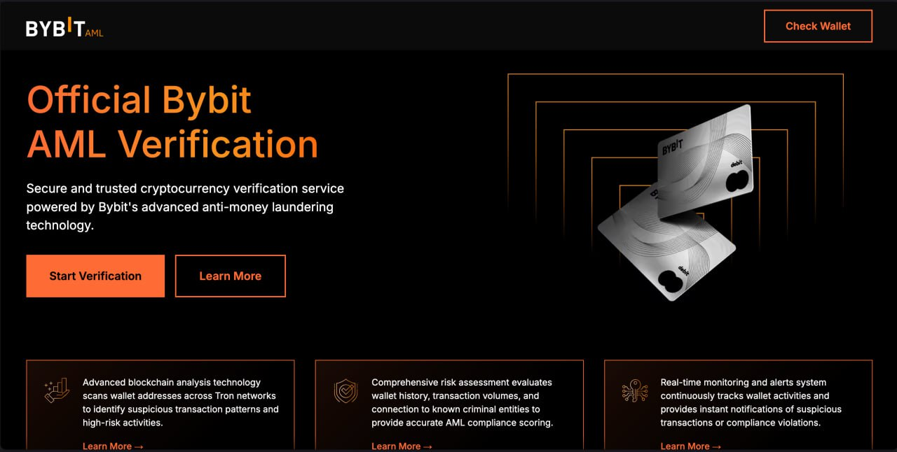
ByBitAML — "Official Bybit AML Verification"
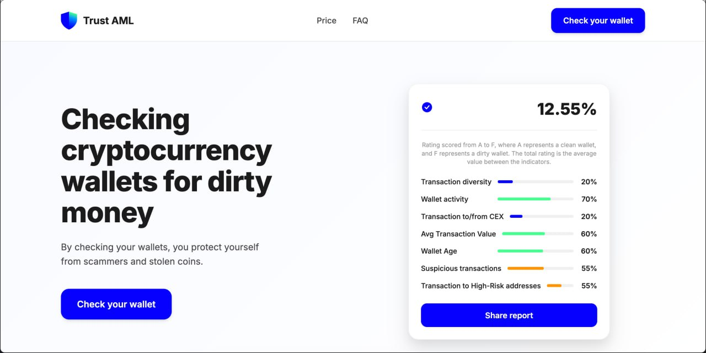
TrustAML — "Checking wallets for dirty money"
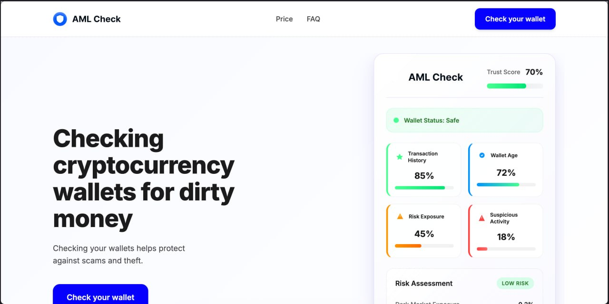
AML_BOT — "AML Check" con Trust Score finto
Categoria: Fake Airdrop / Distribution
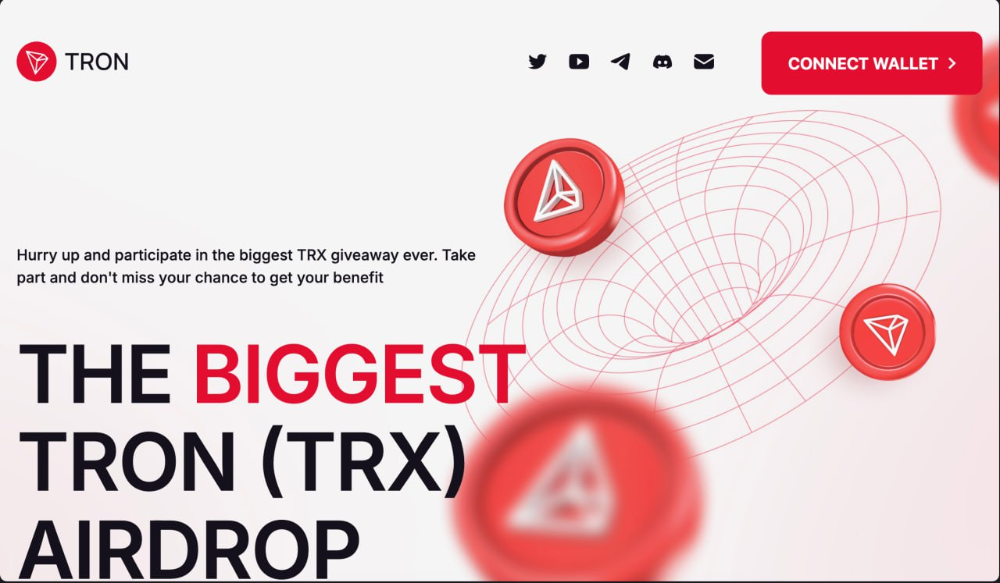
TronDROP — "THE BIGGEST TRON AIRDROP"
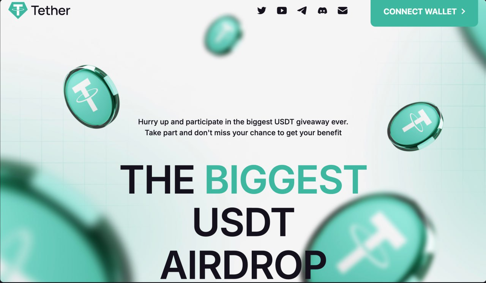
TetherDROP — "THE BIGGEST USDT AIRDROP"
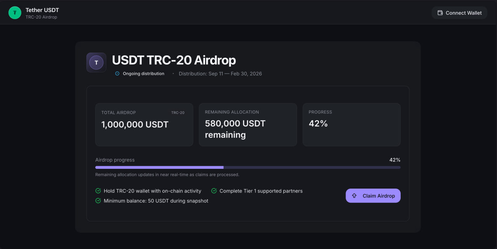
USDT_DROP — "1,000,000 USDT Distribution" al 42%
Categoria: Fake Exchange / Swap
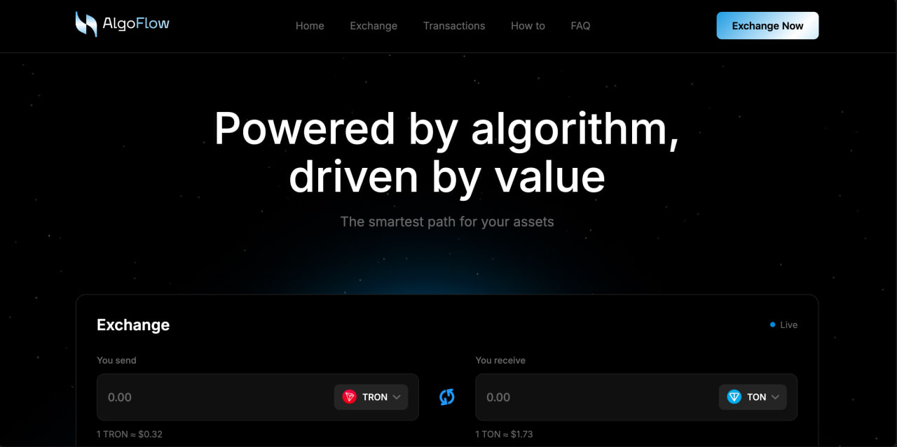
AlgoSwap — "AlgoFlow: Powered by algorithm"
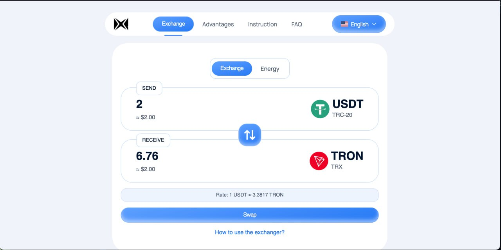
trx-swap — Finto exchange USDT↔TRX
Categoria: Fake Invoice / Payment Gateway
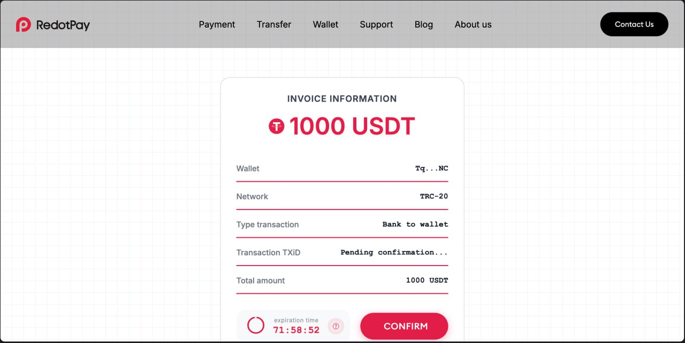
RedotInvoice — "1000 USDT" con countdown
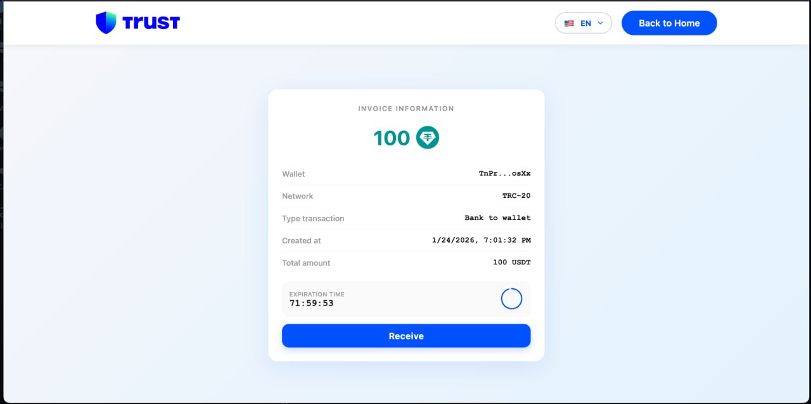
trust-invoice — 100 USDT, bottone "Receive"
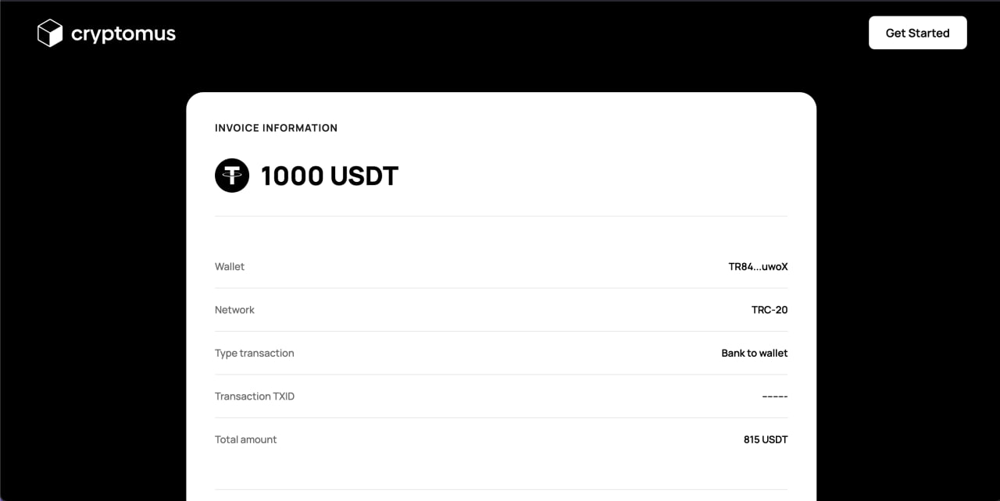
cryptomus-invoice — 815 USDT via Cryptomus
Categoria: Fake Crypto Card / Wallet Service
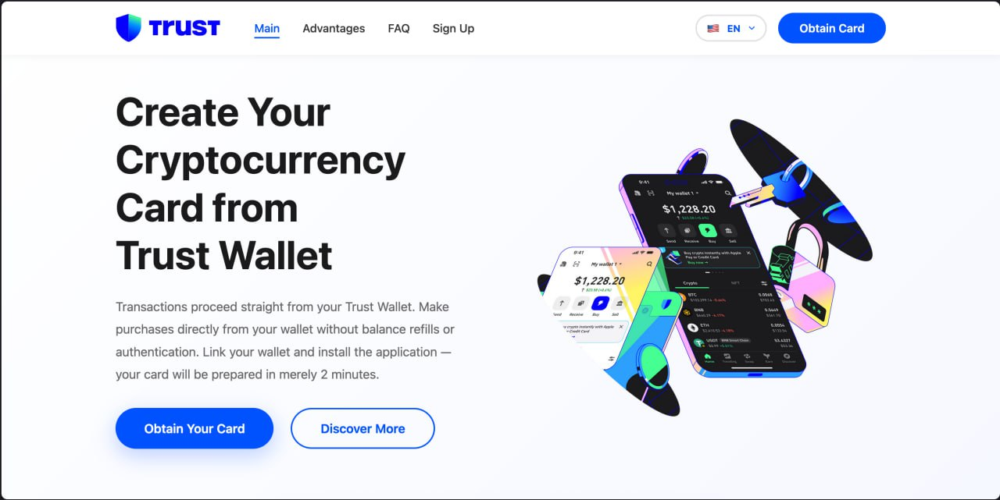
trust-crypto-card — "Create Your Cryptocurrency Card"
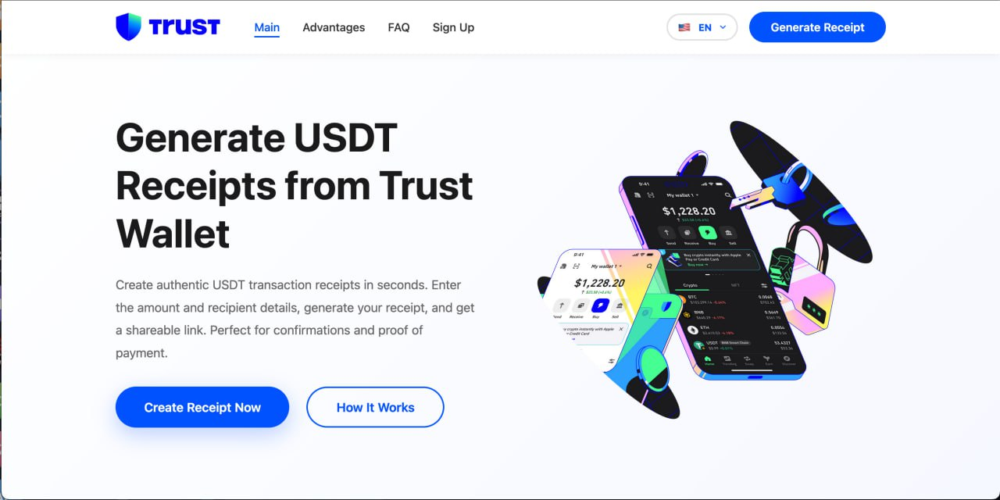
Variante: "Generate USDT Receipts from Trust Wallet"
Ogni screenshot qui sopra è una landing page reale, funzionante, installabile in minuti via bot Telegram. Non sono mockup — sono i template effettivi pubblicati nel canale Designs dell'organizzazione. Le immagini provengono dall'export Telethon dei canali e sono archiviate indipendentemente da PhishDestroy.
08 — I Playbook di Social Engineering. Il Manuale del Ladro.
Questo è il contenuto che mi ha fatto decidere di scrivere l'articolo nonostante il ritardo. Nei canali Telegram e nelle pagine Telegraph collegate, l'autore @[REDACTED] (alias "NC") ha pubblicato tre guide complete di social engineering. Sono manuali operativi, con script conversazionali pronti all'uso, per insegnare agli affiliati come truffare le persone. Li riporto — sintetizzati e tradotti — perché capire le tecniche è l'unico modo per difendersi.
Playbook 1: "AML Направление" — La Direzione AML
Target: chiunque gestisca criptovalute. Vettore: fingersi un intermediario che richiede una "verifica AML" obbligatoria prima di concludere una transazione.
// Script conversazionale — tradotto dal russo // Glossario dell'organizzazione: // "Воркер" (Worker) = l'affiliato truffatore // "Мамонт" (Mammoth) = la vittima // "Дрейнер" (Drainer) = il kit tecnico // "Линк" (Link) = la landing page fake SCENARIO 1: P2P Guarantor (il più veloce) "Sono disposto a fare da garante, ma solo se entrambe le parti confermano la pulizia dei fondi. Ecco il servizio, mandate i report e iniziamo." SCENARIO 2: Vendita auto/tech (assegno alto) "Il prezzo è basso perché accetto solo USDT. Siccome sono un'entità giuridica, ho bisogno di conferma che la tua cripto non provenga da mixer. Fai un check, mandami lo screen con 'Low Risk'." SCENARIO 3: "Aiuto con il freeze" (prede in panico) "Ho avuto lo stesso problema. Il mio wallet aveva una 'coda' dal darknet. C'è un servizio speciale che fa un'analisi profonda e 'scollega' le transazioni sporche." // Regola d'oro: "Se il cliente dubita, digli: // 'Nessun problema, la sicurezza viene prima. Se non vuoi // confermare la pulizia, cercherò un altro acquirente.' // Questo attiva la paura di perdere l'affare."
Playbook 2: "INVOICE Направление" — Il Metodo Invoice
Questo è il più insidioso. L'affiliato non chiede soldi alla vittima — le offre soldi. Il trucco: un finto invoice che sembra un pagamento in entrata. La vittima pensa di ricevere, ma collegando il wallet firma la delega di approve.
// Target: streamer su Kick.com, freelancer su Telegram SCENARIO 1: Kick.com — Finto manager casino "Ehi! Bella presentazione. Il nostro casino cerca nuovi streamer. Scrivimi su TG, parliamo della collaborazione. [in privato] Ti offriamo $5.000/settimana + saldo per le live. La company paga il primo anticipo. Ecco il link al nostro gateway di pagamento Heleket. Devi solo confermare la ricezione." SCENARIO 2: Telegram — Finto acquirente [Variante A — "Manager":] "Il pagamento arriva dalla company via il nostro gateway. Ecco il check, ritira i soldi." [Variante B — "Compratore normale":] [manda screenshot finto errore TrustWallet] "Strano, il wallet si è bloccato. Ti creo un invoice tramite l'exchanger, così arriva sicuro." // Gestione obiezioni: // "Perché non un trasferimento diretto?" // → "Standard aziendale. Passo i budget dalla contabilità. // Abbiamo una partnership con Cryptomus, tutti i pagamenti // passano dai loro check per la reportistica."
Playbook 3: "TRC20 Permit/Approve per Novizi" — Il Metodo Piramide
Pubblicato il 26 marzo 2026 — il più recente. Target: vittime di piramidi finanziarie. L'affiliato contatta persone che hanno già perso soldi in piramidi crypto e si offre di "recuperare i fondi" senza anticipo.
// Il flusso completo — 5 step STEP 1: Trovare le vittime // Cercare in chat tematiche, commenti, forum di persone // che hanno perso soldi in piramidi finanziarie. "Posso recuperare i tuoi fondi. Senza anticipo." STEP 2: Far creare un wallet Trust nuovo e "pulito" "Il wallet deve essere pulito, senza altri asset, così non rischi nulla." // In realtà: serve vuoto perché la vittima non si spaventi // vedendo 0$ nel saldo. Verrà svuotato DOPO che avrà depositato. STEP 3: Far firmare l'approve // Nel dApp, il testo della transazione mostra: "Caso n. 000-228, prelievo dal conto personale di 101.337 USDT (TRC20), ai sensi del punto 5.2 delle regole di prelievo e rimborso. Sul vostro wallet deve essere presente almeno il 10% della somma da ricevere. Una volta soddisfatta la condizione, l'accredito avverrà automaticamente." STEP 4: Convincere a depositare il "10%" "I fondi sono già stati disposti (guarda lo status). Il sistema attende il deposito del tuo 10% di riserva per completare l'accredito dei 100k USDT." // La vittima deposita. Il drainer svuota tutto immediatamente. // La vittima è già una persona che ha perso soldi. // La stanno derubando una seconda volta. STEP 5: Risultato psicologico // La vittima crede: "Mi restituiscono 100k tramite TrustWallet. // Non devo mandare soldi a nessuno — basta avere il 10% sul MIO // wallet personale. Dopo ricevo 110k totali." // → Deposita. → Drainer svuota. → Fine.
I primi due playbook sono truffe sofisticate ma "standard" nel panorama crypto. Il terzo è diverso. Prende di mira persone che hanno già perso i risparmi in piramidi finanziarie e le convince che qualcuno vuole restituire i loro soldi. Le deruba una seconda volta. Con un copione studiato per sfruttare la disperazione. L'autore del manuale (@[REDACTED]) lo presenta come "il metodo che usavo personalmente" e conclude con "questo materiale è a scopo informativo, ricordate i rischi e le leggi del vostro paese." Il cinismo è strutturale.
09 — Il Wallet dell'Operatore e la Blockchain.
Dal payload AML builder abbiamo estratto l'indirizzo del wallet operatore — lo spender nel increaseApproval():
// Wallet operatore — dalla decodifica del parametro "data" Hex: dc5c6bdb788264b97927fc19510e313d3f8483bc Base58: TW4NNonQHJBBCRSyQrcfzHfrLwSzMumDXp Network: TRON (TRC20) // Dati da Tronscan al momento del dump (07 Apr 2026): Transazioni totali: 1.297 Stato: ATTIVO // Pattern delle transazioni: // - Piccoli importi IN da wallet multipli (vittime) // - Importi più grandi OUT verso wallet di raccolta // - Ultime 50 tx: mix di TRX e TRC20 (USDT) // - Account delegation attive → conferma meccanismo drainer
1.297 transazioni. Wallet attivo al momento del dump. L'ultima transazione include un account delegation verso un wallet di raccolta (TKQAZ6i6GSmfNYdpmv3s4MqqqSc9KNWv5b), tipo contractType:0 — confermando il pattern di consolidamento dei fondi rubati.
TronScan · Etherscan · tronpy · TronGrid API
Analisi del wallet operatore e dei 1.297 tx su TronScan, cross-reference del function selector d73dd623 su Etherscan, simulazione transazioni e decodifica del parametro "data" con tronpy, monitoraggio eventi on-chain in real-time con TronGrid API.
10 — Quanto Hanno Rubato.
I pagamenti pubblicati nel canale Payments sono la punta dell'iceberg. Rappresentano solo la quota affiliato (80%) dei soli drain documentati e pubblicati:
Prove on-chain? Ecco tutti e 6 i pagamenti documentati nel canale Payments — con screenshot Tronscan archiviati anche da PhishDestroy:
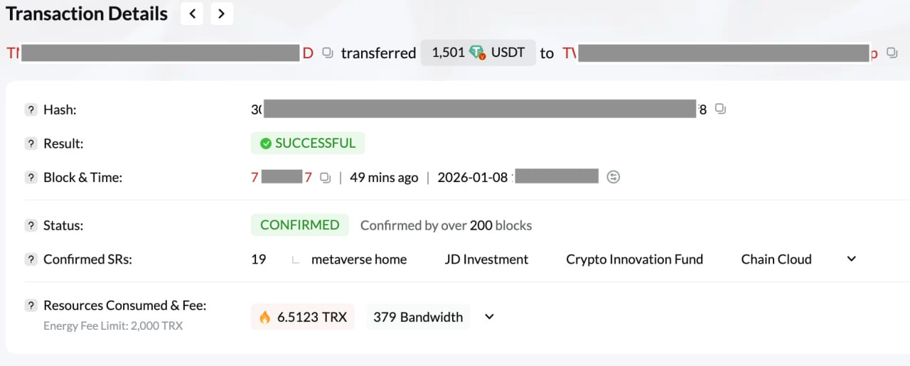
$1.501 USDT — 08 Gen 2026
CONFIRMED
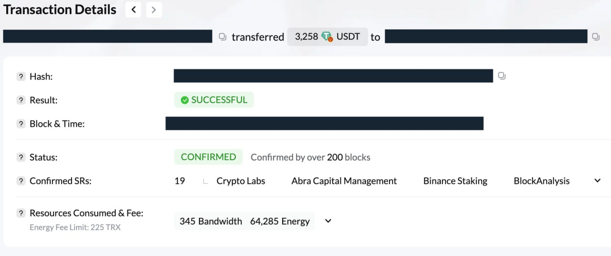
$3.258 USDT — 09 Gen 2026
CONFIRMED
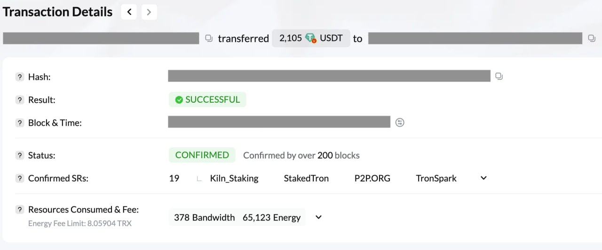
$2.105 USDT — 10 Gen 2026
CONFIRMED
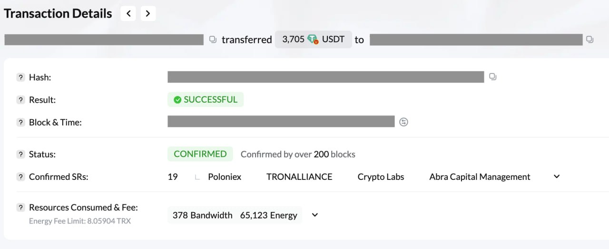
$3.705 USDT — 13 Gen 2026
CONFIRMED · il più alto
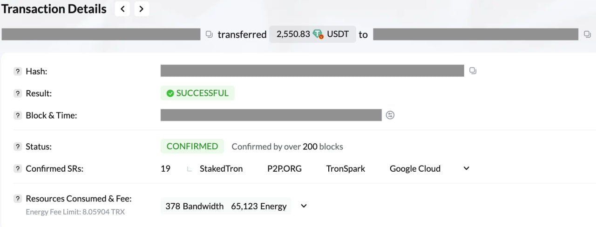
$2.550 USDT — 23 Gen 2026
CONFIRMED
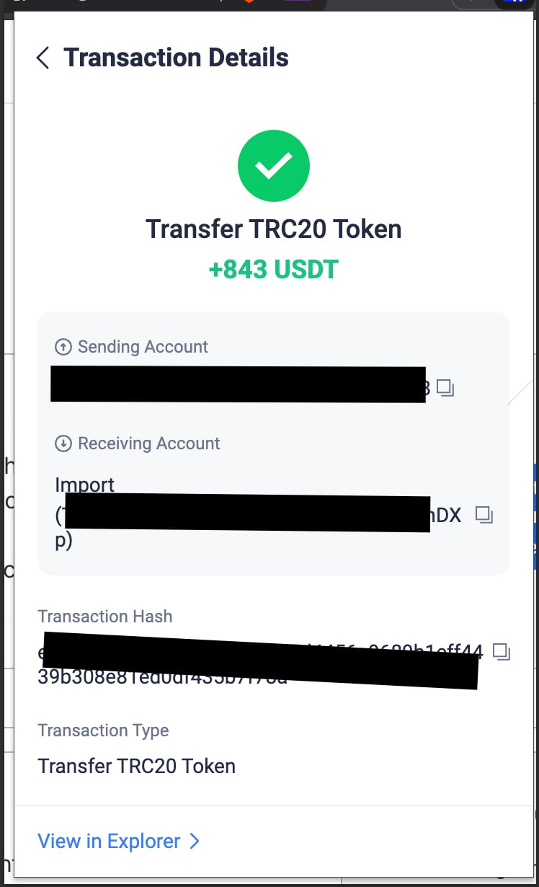
$843 USDT — 28 Gen 2026
CONFIRMED · ultimo visibile
Ogni screenshot sopra è una transazione REALE su TRON, verificabile on-chain. Gli importi mostrati sono i totali drenati — gli affiliati ricevono l'80%. Le prove sono archiviate indipendentemente da PhishDestroy e dalla nostra analisi.
// le vittime quando controllano il saldo dopo aver "verificato" il wallet
I $13.960 sono solo quelli documentati pubblicamente, solo dal canale Payments, solo in gennaio 2026. Non sappiamo quanti affiliati operano simultaneamente. Non sappiamo quanti pagamenti non sono stati pubblicati. Non sappiamo quante landing page parallele esistono oltre a trxonlinegood.com. Con 12+ template e presenza su 5 forum darkweb, il vero danno è probabilmente un ordine di grandezza superiore.
11 — PhishDestroy Conferma: Una delle Reti Più Attive.
A un certo punto dell'indagine ho trovato un report di PhishDestroy.io — pubblicato il 19 febbraio 2026, settimane prima di noi. Il titolo: "Crypto Drainer Toolkit: Inside the Angel Drainer Resellers Targeting Your Wallet".
L'articolo di PhishDestroy classifica CriptoCarina S.r.l. / WalletVacuumers International™ come una delle reti drainer più attive in circolazione, parte di un ecosistema più ampio di reseller Angel Drainer. Il report include la chain di attacco in 9 step, IOC strutturati, e un confronto tecnico con altri kit concorrenti. Il nostro lavoro conferma e espande le loro conclusioni con dati aggiuntivi: i playbook di social engineering, il reverse engineering del bundle.js, l'analisi del JWE, e la timeline completa dal DevLog.
Ma la cosa più importante: PhishDestroy ha anche pubblicato un archivio completo di evidence su GitHub.
// PhishDestroy ScamIntelLogs — archivio pubblico delle prove github.com/phishdestroy/ScamIntelLogs/tree/main/nicecrypto" data-en="// github.com/phishdestroy/ScamIntelLogs/tree/main/nicecrypto">// github.com/phishdestroy/ScamIntelLogs/tree/main/nicecrypto Struttura dell'archivio: ├── NC Designs/ // 13 screenshot template landing page │ └── photos/ // 26 files (13 full + 13 thumb) ├── NC Info ENG/ // Export canale inglese │ ├── result.json // Messaggi strutturati │ ├── messages.html // Render HTML │ └── photos/ // 5 immagini ├── NC Info RUS/ // Export canale russo │ ├── result.json │ ├── messages.html │ └── photos/ // 8 immagini ├── NC Payments/ // Prove di pagamento affiliati │ ├── result.json │ └── photos/ // 6 screenshot Tronscan ├── guide/ // Export completo del GitBook │ ├── index.html │ ├── 1/ // Bot settings │ └── 2/ // Manuali operativi ├── iocs.json // IOC strutturati (JSON) ├── index.html // Evidence browser interattivo └── README.md // Totale: 32 foto, 4 export JSON, documentazione completa // Tutto pubblico, tutto verificabile, tutto archiviato.
Il file iocs.json di PhishDestroy include dati strutturati che confermano i nostri findings:
// Da: github.com/phishdestroy/ScamIntelLogs/nicecrypto/iocs.json { "name": "[REDACTED] Drainer", "type": "Crypto Wallet Drainer", "network": "TRON", "status": "Active", "first_seen": "2025-12-22", "last_activity": "2026-01-28", "affiliate_share": "up to 80%", "features": [ "TRON network drainer", "Telegram bot control panel", "WalletConnect integration", "Modal window customization", "Auto-withdraw on approval", "Balance monitoring", "Custom landing pages" ], "planned_networks": ["SOL", "EVM", "TON"] } // Ogni singolo campo corrisponde a quanto trovato // nella nostra analisi indipendente. Stessa rete, // stesse date, stesse features, stessa roadmap.
L'analisi di PhishDestroy.io: phishdestroy.io/crypto-drainer-networks. L'archivio GitHub: github.com/phishdestroy/ScamIntelLogs. Include IOC strutturati, 32 foto di evidence, export completi dei canali, e documentazione GitBook. La convergenza di analisi indipendenti rafforza le conclusioni: non stiamo guardando un one-shot. È un'operazione strutturata e attiva da mesi. Le 13 immagini dei template e i 6 screenshot dei pagamenti utilizzati in questo articolo provengono direttamente dal loro archivio — verificabili da chiunque.
12 — Quello Che Faremo. Sequel Assicurato.
Qui mi sono bloccato. Non perché l'indagine fosse finita — tutt'altro. Ma perché era Pasqua, ero già in ritardo sulla pubblicazione di settimane, e la colomba stava diventando un reperto archeologico. Un articolo a metà vale più di un'indagine completa che non viene mai pubblicata. Quello che seguirà nella Parte II:
- Takedown formale delle landing page attive — notifica a registrar, CDN (Cloudflare), e provider hosting.
- Segnalazione alle autorità competenti — IOC strutturati via Faraday, dump Telegram, analisi blockchain, endpoint mappati, playbook di social engineering come evidenza.
- Cracking dei token — Hashcat sul JWT (se HS256), John The Ripper su hash dai dump, Hydra e Medusa per brute force sul pannello operatore, CeWL per wordlist custom dalla wiki, Haiti per identificazione hash, RsaCtfTool sulla componente JWE.
- IDOR exploitation — Burp Intruder su /operator/wallets/{id}, enumerazione wallet affiliati, wallet swap. Il finale.
- Post-exploitation — CrackMapExec per lateral movement, Metasploit per CVE su nginx/1.29.4 o FastAPI, Volatility per memory dump e estrazione chiavi.
- Tracciamento blockchain completo — dalle 1.297 transazioni del wallet operatore a tutta la catena di consolidamento.
- Forum intelligence — i thread su WWH, LOLZ, BHF sono ancora lì. Non per molto.
Amass · Shodan · DNSRecon · Certstream · Nmap · Masscan · cariddi · Telethon · Burp Suite · OWASP ZAP · ffuf · feroxbuster · Gobuster · Wireshark · SQLMap · Ghidra · Radare2 · js-beautify · strings · ExifTool · Hashcat · John The Ripper · Hydra · Medusa · CeWL · Haiti · RsaCtfTool · TronScan · Etherscan · tronpy · Metasploit · CrackMapExec · Volatility · BBOT · Faraday · Obsidian · PhishDestroy
Se state leggendo questo articolo — e sapete già chi siete — benvenuti. Abbiamo i vostri canali Telegram, il dump completo dei messaggi e delle foto, il vostro wallet operatore con 1.297 transazioni, la vostra infrastruttura C2 con 9 endpoint mappati, il vostro bundle.js deobfuscato, il vostro payload JWE decodificato, i vostri manuali di social engineering in tre direzioni, e le prove di pagamento dei vostri affiliati. Tutto archiviato, datato, e pronto per la consegna. L'indagine non è finita. È solo in pausa editoriale.
Conclusioni. Come Ho Perso la Pasqua e Trovato un'Organizzazione Criminale.
L'email che ha dato il via a tutto aveva oggetto: "Important Security Alert!". Il mittente si chiamava "Approval Checker" da un dominio che sembra un emporio di tappeti del Kerala. Era uno dei phishing più banali che mi siano capitati. E io, invece di mangiare la colomba come Dio comanda, ci ho buttato tutta la Pasqua. E dietro c'era un'organizzazione con:
- Un payload JavaScript da 319KB esportato come
NcAffiliateDrainer - Crittografia JWE (AES-128-GCM) per nascondere le transazioni malevole
- La funzione
increaseApproval()conuint256.MAX— approvazione illimitata e permanente - 12+ template di landing page pronti all'uso con bot Telegram di deploy
- 3 playbook di social engineering dettagliati, incluso uno che prende di mira vittime di piramidi finanziarie
- DevLog settimanali e una product roadmap (SOL, EVM, TON in arrivo)
- Presenza su 5 forum darkweb con depositi di garanzia
- Pagamenti documentati a 6+ affiliati per ~$13.960 stimati totali
- Un wallet operatore con 1.297 transazioni ancora attive
Il tutto avviato il 22 dicembre 2025 e ancora operativo oggi, 7 aprile 2026. La mia Pasqua? Sacrificata. La colomba? Intatta. Le uova di cioccolato? Non pervenute. Ma almeno ho i dump Telegram.
La lezione, come sempre in questo campo: il phishing banale non è detto che sia stupido. È solo la superficie. Sotto c'è spesso un'infrastruttura sorprendentemente professionale, una quantità di soldi rubati che fa venire il voltastomaco, e persone reali che stanno perdendo i loro risparmi — a volte per la seconda volta.
Non collegare il wallet a siti sconosciuti. Qualsiasi sito. Qualsiasi motivo. "AML check", "security verification", "airdrop claim", "invoice da ritirare". Se qualcuno vi chiede di firmare una transazione per "verificare" o "ricevere" qualcosa — state firmando una delega increaseApproval(uint256.MAX). Per sempre. Se l'avete già fatto: andate su Tronscan, controllate le approvazioni attive, e revocate tutto immediatamente.
"Il phishing più pericoloso non è quello che sembra sofisticato. È quello che apri durante le vacanze di Pasqua pensando che ci vorranno cinque minuti."
// Parte II in arrivo. Con il takedown. Con i nomi veri. Con tutto.